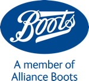
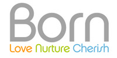
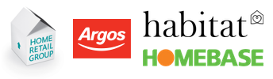

The below retailers support the campaign at a national level. In addition, there are many hundreds of shops of all types and sizes supporting our local campaigns - see their pages for more details.
Aspace
"Aspace supports the Close the Door campaign. We close the door in our stores to provide a comfortable, safe environment for even our youngest customers, as well as their parents and our team"
Boots
"Caring for the environment has always been at the very heart of our business. Right from our use of highly efficient Combined Heat and Power energy centres since the 1920s, through to award-winning energy-efficient lighting schemes in our stores in the 1990s. Since 2009, we have been proud owners of the independently accredited Carbon Trust Standard, confirming our ongoing commitment to excellence in energy management and further reducing our carbon emissions. Alongside our long-term carbon reduction ambitions and ongoing investment in low carbon technology, our EnergyCare programme for Boots colleagues provides tools and information to help them take local action and actively care for the environment through energy efficiency. Keeping doors closed is a simple action that we recommend for our colleagues through this programme, so we are very pleased to be able to support the aims of the ‘Close the Door’ campaign. For more information about our approach to environmental management, please visit our website boots.com/csr"
Born
"When the heaters are on we always keep our doors closed at Born. We open the door for customers when they enter and leave our stores. This not only saves our heating bills and carbon footprint but ensures our customers get a friendly greeting and goodbye. As a company that sells green and ethical baby products it's important that we follow that ethos through in our business in everything we do. It's also reassuring for customers who have toddlers as they aren't worried about them running off. This has always really worked well for us, it's useful to be able to communicate that to our customers by way of the sticker on the door."
Costa Coffee
"Costa Coffee is delighted to support the Close the Door campaign and save energy within our stores. At Costa we pride ourselves on taking responsibility to the environment seriously. Having the door closed saves on carbon emissions as well as providing cost savings that we can pass on to our customers. It is also fundamental to the warm and welcoming environment which our customers love, as well as ensuring our staff are kept comfortable."
Fenwick
"Fenwick are pleased to support the Close the Door campaign to encourage other retailers to close their doors when using heating or air conditioning."
H&M
"H&M in UK and Ireland supports the Close the Door campaign. We are deeply committed to reducing energy use and air pollution in stores as well as using renewable energy where available. For years we have been acting to save significant amounts of energy by a programme of installing automatic and closed doors. Our sustainability work includes the entire value chain, from production all the way into the customers hands. The stores are part of this, where we want to ensure good and healthy conditions both for customers and our employees."
Catarina Midby, Sustainability Manger, H&M UK and Ireland
Home Retail Group
"Home Retail Group (Argos, Habitat and Homebase stores) is pleased to support the Close the Door initiative. Acting responsibly is of course the right thing to do, but we believe it makes good business sense too. Driving down our carbon emissions, saving energy, building a great place to work in, and being a good neighbour in the communities in which we operate is intrinsic to our successful business. Close the Door sits squarely with this."
John Lewis / Waitrose
"The John Lewis Partnership fully supports the aims of the Close the Door campaign. We take our responsibility to the environment very seriously and know that increasing the energy and resource efficiency of our business must underpin our growth plans. We have made a commitment to reduce our absolute operational carbon emissions by 15% by 2020/21, against a baseline of 2010/11. Ensuring our shops are energy efficient, benefitting both our customers and Partners, is key to achieving this. We have policies and mechanisms in place to ensure we keep the street doors of our John Lewis and Waitrose shops closed and have gone to lengths to install automatic doors across the majority of our shops with street openings."
Marks and Spencer
"Marks & Spencer is pleased to support the Close the Door campaign and is committed to energy conservation and reducing our energy consumption. As part of our Plan A commitments, we are working towards reducing our total energy usage by 35% by 2015. We are achieving this target by investing in energy efficient technologies, encouraging our store colleagues to be more energy aware and increasing consumption monitoring across our store and office estate. Our store doors are an important part of our energy strategy and we always ensure that our mixture of automatic and manual doors, lobbies and revolving doors not only save energy but keep our customers and store colleagues safe and comfortable. We continually look at ways to increase our doors efficiency and are currently trialling intelligent auto door opening controls to reduce the number of unnecessary openings."
Neal's Yard
"At Neal’s Yard Remedies we’ve closed our doors against energy waste since 2008, making significant savings in energy costs and CO2 emissions, and keeping our staff and customers comfortable. We care greatly about all these factors and this is such a simple measure to achieve great benefits. It is simply a myth that a closed door will affect transactions and profit, the continued success of Neal’s Yard Remedies is proof that it doesn't."
Louise Green, Head of Sustainability
Páramo
"Páramo is very pleased to support the Close the Door campaign which complements our own ethos. We are always looking for the path of least environmental impact and we offer a reward to customers who return their old Páramo garments for recycling with us. The doors are closed at our Covent Garden and Wadhurst stores whenever we are using heating. It's more comfortable for our customers and staff, as well as helping to save energy and cost."
Ryman
"The people at Ryman were pleased to help with Close The Door Campaign’s research and support the objectives of the initiative. It is good business practice to keep our customers and employees comfortable and conserve energy. At Ryman we keep our doors closed when our heating is on in the winter and likewise when air conditioning is in use in the summer."
Selfridges
"Selfridges aims to be an environmentally responsible company. We always look for ways to reduce energy consumption and cut carbon emissions without compromising our high standards of customer service and as such we recognise the importance of the ‘Close the Door’ campaign."
Tesco
"Tesco strongly supports the objectives of the Close the Door campaign to save energy and reduce CO2 emissions by keeping store doors closed. We set ambitious targets every year to reduce energy consumption in our stores and help meet our long term targets of halving the emissions impact of our buildings by 2020 and becoming a zero carbon business by 2050. We achieve our targets by using the most energy efficient technologies available and carefully monitoring our energy use to eliminate any unnecessary consumption - and an important part of this is fitting highly efficient automatic doors, as well as extra measures such as draught lobbies on the larger stores. Closing the doors also helps to keep our customers and staff comfortable, which is equally important to us."
Wickes / Travis Perkins
 "At Wickes we close our door when heating and cooling our shops as part of our 'Green Thinking' ethos. That way we save significant amounts of energy and keep our staff and customers comfortable at the same time. Wickes supports the Close the Door Campaign."
"At Wickes we close our door when heating and cooling our shops as part of our 'Green Thinking' ethos. That way we save significant amounts of energy and keep our staff and customers comfortable at the same time. Wickes supports the Close the Door Campaign."